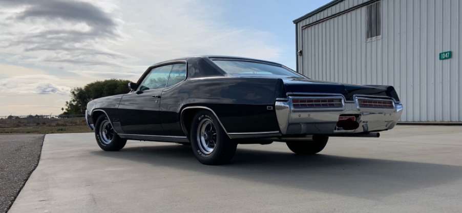
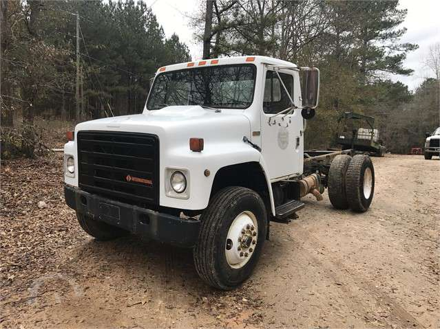
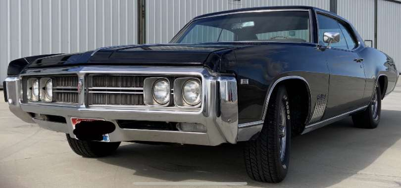

Rusty's Obsolete Car Part's
Ever buy that rusty, old car, of your dreams, but can't seem to find that one part you need to make it work? Well, at Rusty's Obsolete Car Part's, we sell old car parts ranging the 1990s and earlier. Come on in! Our employess are well informed, and are as passionate about your vehicle as you are!


